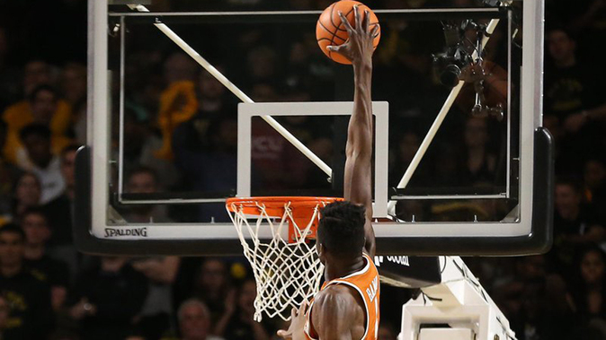

Características del básquetbol
Las principales características del básquetbol son:
- Objetivo. El objetivo del juego es atravesar con el balón el aro del equipo contrario, tantas veces como sea posible, para acumular puntos. El equipo con más puntos al final del partido, gana.
- Anotaciones. Cada canasta corresponde a una anotación, pero las canastas tienen distinto puntaje de acuerdo al lugar de la cancha desde el que se realiza el tiro. Una canasta vale dos puntos si se realiza dentro de la línea de tres puntos (a 6,75 m del aro), tres puntos si es de larga distancia y un punto si es un tiro libre.
- Campo de juego. La cancha de básquetbol es un rectángulo que mide 28 metros por 15 y tiene una canasta en cada extremo.
- Duración. El juego dura cuatro períodos de diez minutos cada uno, con la posibilidad de un tiempo extra de cinco minutos en caso de que exista un empate en la puntuación.
- Duración. Se enfrentan dos equipos de máximo doce jugadores cada uno. Solo puede haber cinco jugadores de un equipo simultáneamente en la cancha.
- Árbitros. Durante el partido intervienen: un árbitro principal, un árbitro auxiliar y los árbitros de mesa. El árbitro tiene como función dar inicio y final al partido, impartir sanciones y controlar el juego.
